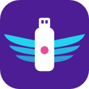
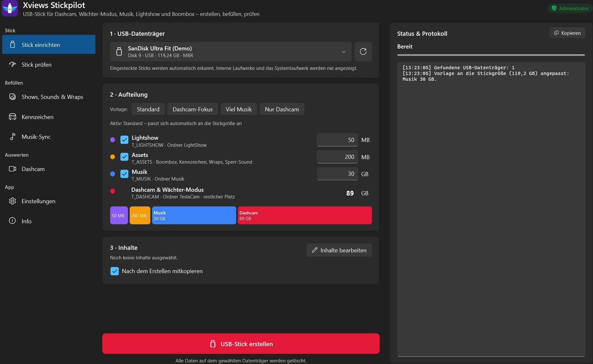
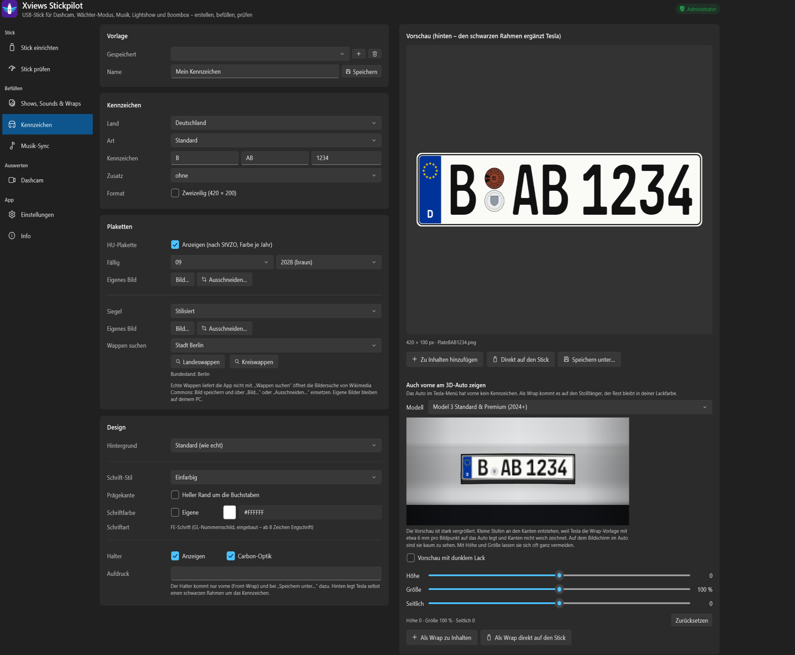
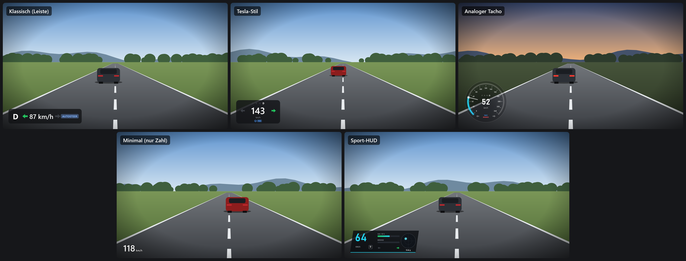
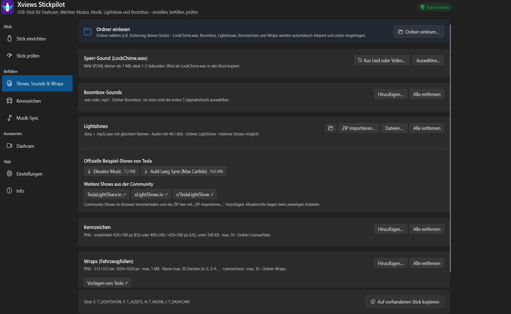

Kennzeichen wie in echt
Mit FE-Schrift, Plaketten und Wappen-Suche anhand des Ortskürzels.
- HU-Plakette in der richtigen Farbe je Jahr
- Saison-, Kurzzeit- und Ausfuhrkennzeichen
- Carbon- oder 3D-Optik
- Vorne am 3D-Auto als Wrap für Model 3, S, X und Y

StickpilotKostenloses Windows-Tool, das den kompletten Tesla-USB-Stick einrichtet, befüllt und prüft. Dazu gibt es einen Kennzeichen-Generator und einen Dashcam-Viewer mit Fahrdaten.
Kostenlos · Windows 10/11 (64 Bit) · ohne Installation · Privates Projekt ohne Verbindung zu Tesla, Inc.

Welche Ordner braucht das Auto? Warum spielt die Lightshow keinen Ton? Wieso taucht das Kennzeichen nicht auf? Stickpilot kümmert sich um die Details.
Aufteilung für Dashcam und Wächter-Modus, Musik, Lightshow und Boombox. Vorlagen passen sich automatisch an die Stickgröße an.
Geschwindigkeitstest: Tesla verlangt für die Dashcam mindestens 4 MB/s dauerhafte Schreibrate.
Lightshows, Boombox-Sounds, Sperr-Sound und Wraps hinzufügen, alles auf die Tesla-Vorgaben geprüft. Mit Werkstatt für den eigenen Sperr-Sound.
Deutschland, Österreich, Schweiz, Niederlande und USA, mit HU-Plakette nach StVZO. Auch als Front-Kennzeichen am 3D-Auto.
Alle Kameras gleichzeitig, Fahrdaten, Karte mit Fahrstrecke, Clips zuschneiden und exportieren. Auch verschlüsselte Clips ab Software-Update 2026.20.
Überträgt nur neue und geänderte Titel. Updates der App mit einem Klick, inklusive Prüfsumme.
Mit FE-Schrift, Plaketten und Wappen-Suche anhand des Ortskürzels.

Tempo, Gang, Blinker, Bremse, Autopilot und GPS direkt im Video.

Inhalte sammeln, prüfen lassen und mit einem Klick auf den Stick bringen. Lightshow-Tonspuren werden bei Bedarf auf 44,1 kHz umgewandelt.

Für Windows 10 und 11 (64 Bit). Einfach herunterladen und starten, eine Installation ist nicht nötig.
| Datei | Größe | Hinweis |
|---|---|---|
| XviewsStickpilot.exe | ca. 72 MB | läuft sofort, empfohlen |
| XviewsStickpilot-klein-benoetigt-dotnet10.exe | ca. 28 MB | braucht die .NET 10 Desktop Runtime |
Beim Start fragt Windows nach Adminrechten. Die braucht das Tool zum Formatieren des Sticks.
Meldet Windows „Unbekannter Herausgeber“, auf „Weitere Informationen“ und dann auf „Trotzdem ausführen“ klicken. Die EXE ist nicht signiert, weil ein Zertifikat Geld kostet.
Prüfsummen (SHA-256) und VirusTotal-Ergebnis jeder Version stehen in den Release-Notizen.
X steht für das Unbekannte, views fürs Sehen. Den Namen gibt es seit Counter-Strike 1.5. Später stand er für HDR-Fotos im Netz, heute für dieses Tool. Denn auch ein Tesla-USB-Stick steckt voller Unbekannter.
Und der Stickpilot? Der Tesla hat seinen Autopiloten, also bekommt der Stick auch einen: von der leeren Partition bis zum Kennzeichen am 3D-Auto.
Das Unbekannte sehen, Stick rein, fertig.